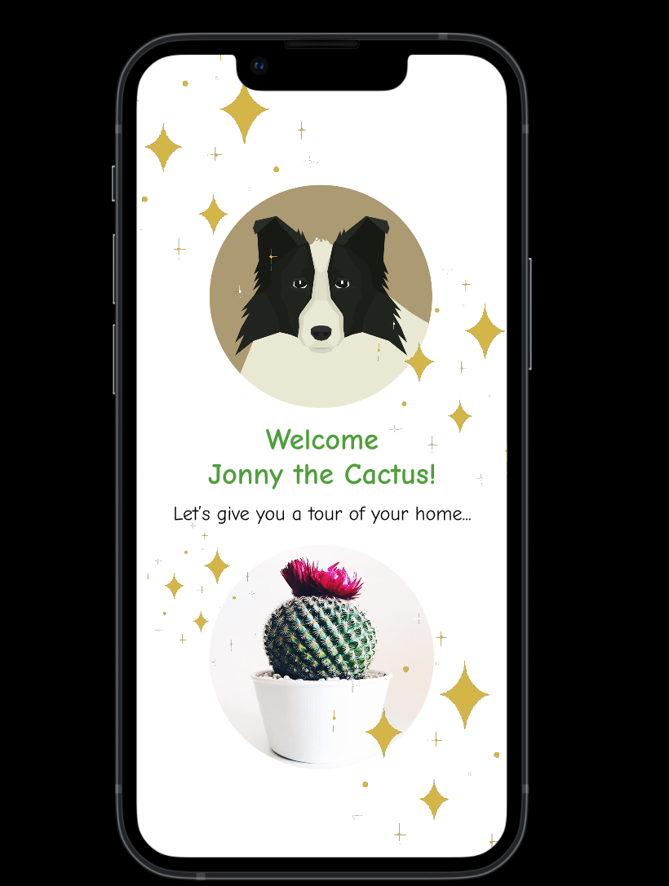

The Pet Plant app, in collaboration with a micro:bit, displays the conditions of their plant.

From our user experience research, children expressed their desire to see a pet, so we let children choose a pet as the avatar of their plant, in the hope of building children’s emotional attachment towards the plant.